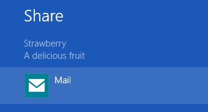

The following code snippet shows how to share the currently selected item in a ListView.
Here we have the XAML to setup the page:
<Page x:Class="SearchAndShareDemo.MainPage" xmlns="http://schemas.microsoft.com/winfx/2006/xaml/presentation" xmlns:x="http://schemas.microsoft.com/winfx/2006/xaml" xmlns:d="http://schemas.microsoft.com/expression/blend/2008" xmlns:mc="http://schemas.openxmlformats.org/markup-compatibility/2006" xmlns:SearchAndShareDemo="using:SearchAndShareDemo" mc:Ignorable="d" DataContext="{Binding RelativeSource={RelativeSource Mode=Self}}" d:DataContext="{d:DesignInstance SearchAndShareDemo:MainPage, IsDesignTimeCreatable=True}"> <Grid Background="{StaticResource ApplicationPageBackgroundThemeBrush}"> <StackPanel Margin="30" > <TextBlock x:Name="tbStatus" Text="{Binding ElementName=lvList, Path=SelectedItem}" FontSize="32" Width="150" Margin="30" /> <ListView x:Name="lvList" ItemsSource="{Binding Fruit}" Width="150" /> </StackPanel> </Grid> </Page>
And here we see the actual share-related code:
public sealed partial class MainPage : Page { public List<string> Fruit { get; set; } public MainPage() { this.InitializeComponent(); Fruit = new List<string> {"Apple", "Orange", "Banana", "Pear", "Strawberry", "Mango", "Peach", "Blueberry", "Pineapple"}; } protected override void OnNavigatedTo(NavigationEventArgs e) { // Register for DataRequested events (Share contract) - this has to be done in each page that can share it's data DataTransferManager.GetForCurrentView().DataRequested += OnShareDataRequested; } protected override void OnNavigatedFrom(NavigationEventArgs e) { // De-Register for DataRequested events (Share contract) - this MUST be done or an exception will be thrown // if the page is re-visited DataTransferManager.GetForCurrentView().DataRequested -= OnShareDataRequested; } private void OnShareDataRequested(DataTransferManager sender, DataRequestedEventArgs args) { // Share... This method's called when the user invokes the share charm // Setup the summary data shown when the share charm's invoked args.Request.Data.Properties.Title = lvList.SelectedItem.ToString(); args.Request.Data.Properties.Description = "A delicious fruit"; // Share the text of the selected fruit - this is what actually gets shared with the other app args.Request.Data.SetText(lvList.SelectedItem.ToString() + " was selected - it's a delicious fruit!"); } }
When we run the app, select a fruit and then invoke the share charm, we see the following (app's capable of sharing text will differ from one machine to another - here only the Mail app is capable of sharing our text):
